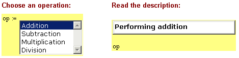
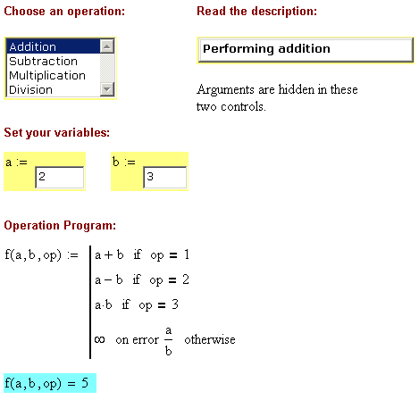

Using Controls Together |
| Overview |
In your use of controls, you will probably find it necessary to mix them in your worksheets. For example, you might want the user to select from among choices in a list box, then specify some numerical parameters directly using either a slider or a text box. Sometimes, you may want to use these controls interdependently such that output from one control is used as input from another control.
You can do this by adding input variables to one or more controls, then using output variables from a previous control as the value for these inputs. Controls follow the same dependencies as any other regions in the worksheet, so place any dependent controls to the right or below the controls and variables upon which they are dependent.
You can also link one control to another using Mathcad's Automation commands to get values out of the worksheet. You can, of course, use Automation to set values in the worksheet as well, but remember that this will behave as if you have set the value at the very start of the sheet. This may produce unexpected results.
| Example |
The following shows scripts for both a ListBox control and an associated TextBox control. The list box generates an index variable, 1 through 4, which is used as input to the text box. The text box uses this index to display feedback to the user. The output variable from the list box is assigned, in the Mathcad worksheet, to the variable name op. This value is also used in subsequent calculations.
The text box script calls the worksheet variable, op, through Mathcad's Automation interface, rather than using it from its input value. The input value must still be assigned, however. Otherwise, the text box will not automatically recalculate when op is changed.
List Box |
Text Box |
Rem Initialize List Box
|
Sub TextBoxEvent_Start()
|

To make this set of controls more streamlined looking in your worksheet, it is a good idea to hide the arguments. Right-click the control and select Hide Arguments from the menu. Here is the sample worksheet with the arguments hidden:

Other worksheets containing controls are located in the qsheet\Samples\Controls subdirectory of your installation of Mathcad. See the Programming section of QuickSheets.